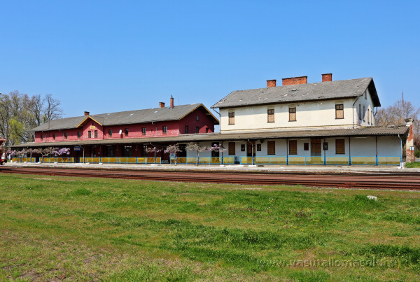
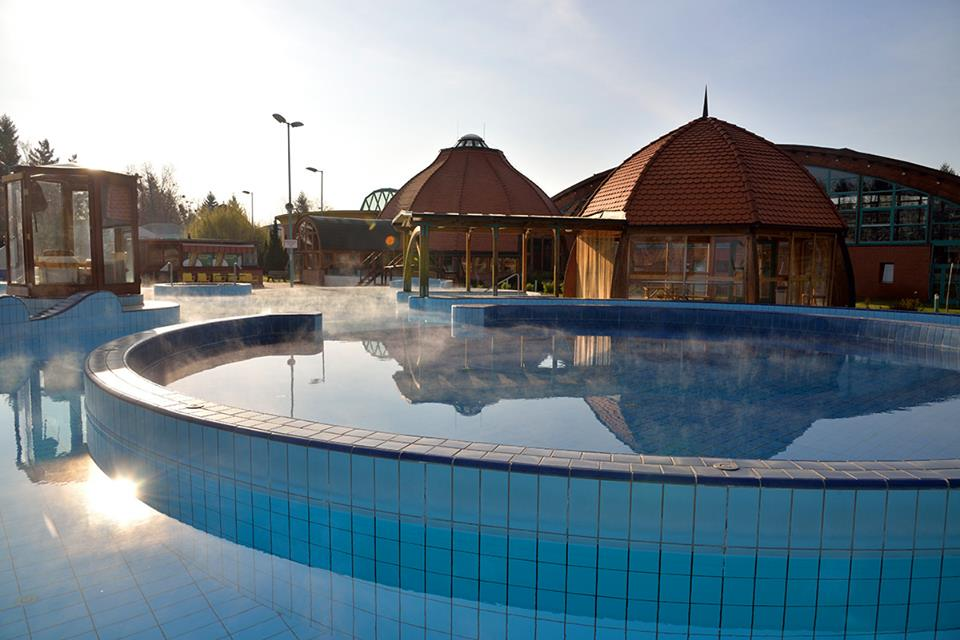

Warum lohnt sich ein Halt in Barcs?
Barcs ist eine Kleinstadt nahe der kroatischen Grenze in Somogy. Sie ist ein wichtiger Grenzbahnhof und lohnt sich auch wegen der Dráva, der Natur und des Thermalbads.

Entdecke Barcs mit einem Klick!


Barcs ist eine Kleinstadt nahe der kroatischen Grenze in Somogy. Sie ist ein wichtiger Grenzbahnhof und lohnt sich auch wegen der Dráva, der Natur und des Thermalbads.


Thermalbecken, Wellnessangebote und Strandbereich an einem Ort, ideal für eine entspannte Pause.
Route planenSpaziergänge, Vogelbeobachtung und Wasserprogramme machen die Dráva zu einem besonderen Naturerlebnis.
Route planenDas Museum zeigt Volkskultur, Naturwerte und Ortsgeschichte der Dráva-Region.
Route planenWähle eine Hauptkategorie, dann eine Unterkategorie und anschließend einen konkreten Ort. Die Karte zeigt den ausgewählten Ort, und du kannst eine Fußroute vom Bahnhof anfordern.